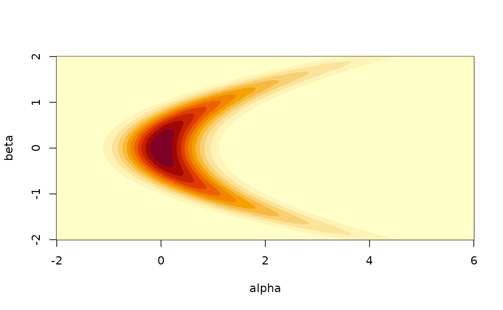
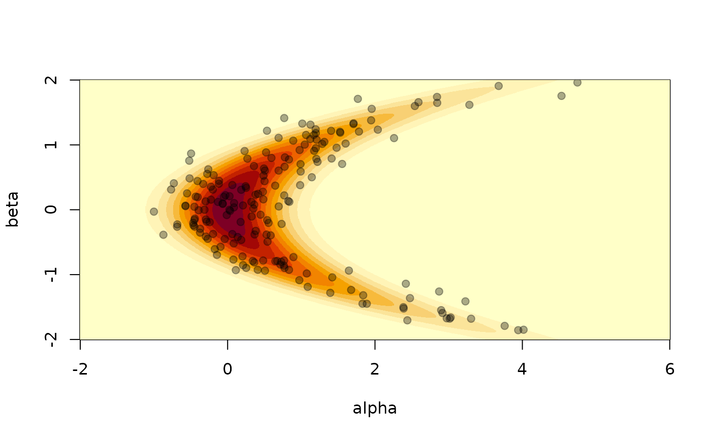
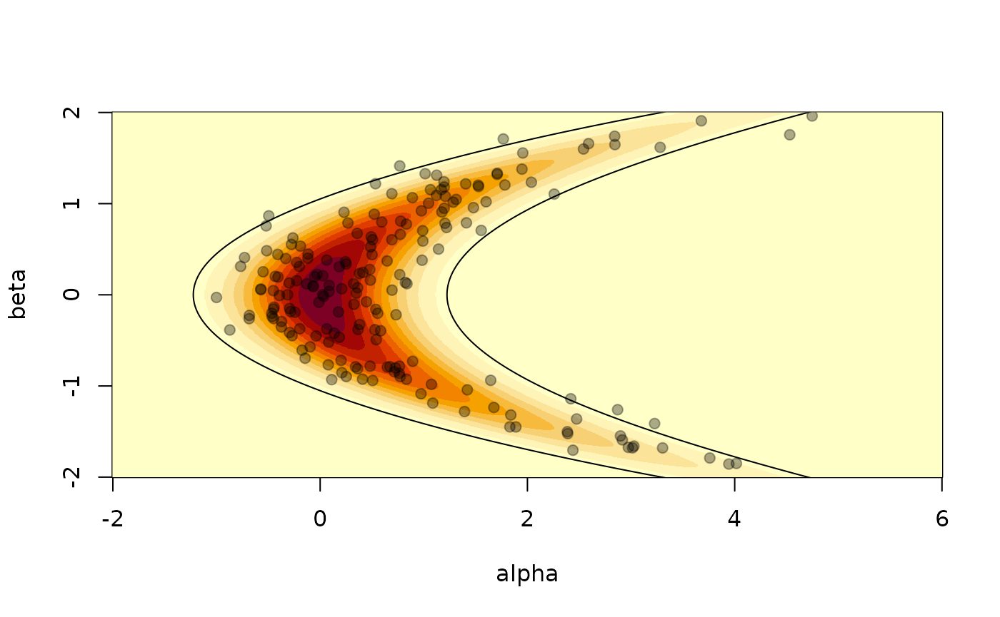
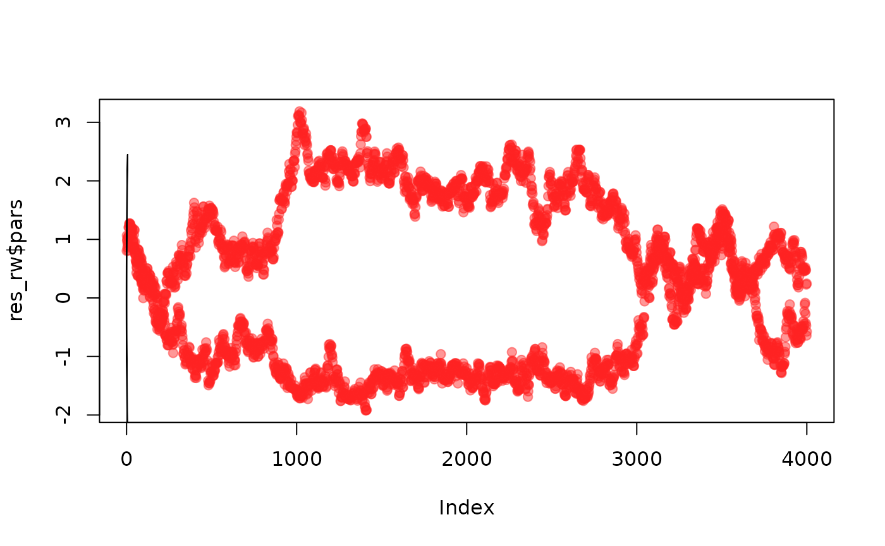
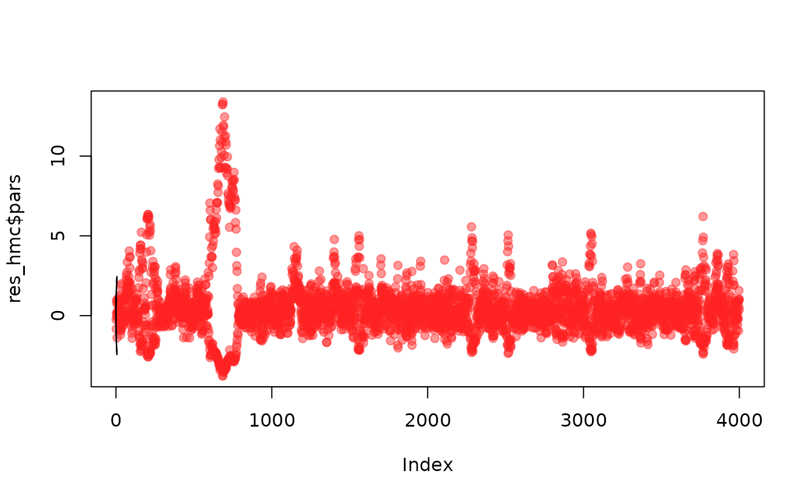

This vignette will describe the samplers available in mcstate2.
Comparisons
The bendy banana
This example shows HMC outperforming a random walk on a two
dimensional banana-shaped function. Our model takes two parameters
alpha and beta, and is based on two successive
simple draws, with the one conditional on the other:  \[
\beta \sim Normal(1,0) \\
\alpha \sim Normal(\beta^2, \sigma)
\]  with \(\sigma\) the
standard deviation of the conditional draw.
We’ll use R’s dnorm for the likelihood calculations and
then differentiate the density by hand (using the formula of the
gaussian density) to derive the gradient by hand. We skip the details
here as this will be automated in an upcoming version of the package.

banana_model <- function(sd = 0.5) {
mcstate_model(list(
parameters = c("alpha", "beta"),
direct_sample = function(rng) {
beta <- rng$random_normal(1)
alpha <- rng$normal(1, beta^2, sd)
c(alpha, beta)
},
density = function(x) {
alpha <- x[[1]]
beta <- x[[2]]
dnorm(beta, log = TRUE) + dnorm((alpha - beta^2) / sd, log = TRUE)
},
gradient = function(x) {
alpha <- x[[1]]
beta <- x[[2]]
c((beta^2 - alpha) / sd^2,
-beta + 2 * beta * (alpha - beta^2) / sd^2)
},
domain = rbind(c(-Inf, Inf), c(-Inf, Inf))))
}Let’s create a model with \(\sigma = 0.5\)
m <- banana_model(0.5)We can plot a greyscale visualisation of its density by computing the density over a grid. Normally this is not possible of course:
a <- seq(-2, 6, length.out = 1000)
b <- seq(-2, 2, length.out = 1000)
z <- outer(a, b, function(a, b) dnorm(b) * dnorm((a - b^2) / 0.5))
image(a, b, z, xlab = "alpha", ylab = "beta")
In this particular case we can also easily generate samples, so we know what a good sampler will produce:
rng <- mcstate_rng$new()
s <- vapply(seq(200), function(x) m$direct_sample(rng), numeric(2))
image(a, b, z, xlab = "alpha", ylab = "beta")
points(s[1, ], s[2, ], pch = 19, col = "#00000055")
It is also possible to compute the 95% confidence interval of the distribution using the relationship between the standard bivariate normal distribution and the banana shaped distribution as defined above. We can check than roughly 10 samples (out of 200) are out of this 95% CI contour.
theta <- seq(0, 2 * pi, length.out = 10000)
z95 <- local({
sd <- 0.5
r <- sqrt(qchisq(.95, df = 2))
x <- r * cos(theta)
y <- r * sin(theta)
cbind(x^2 + y * sd, x)
})
image(a, b, z, xlab = "alpha", ylab = "beta")
lines(z95[, 1], z95[, 2])
points(s[1, ], s[2, ], pch = 19, col = "#00000055")
Sampling with other samplers
It is not generally possible to directly sample from a density (otherwise MCMC and similar methods would not exist!). In these cases we need to use a sampler based on the density and if available possibly the gradient of the density.
We can start with a basic random-walk sampler
sampler_rw <- mcstate_sampler_random_walk(vcv = diag(2) * 0.01)
res_rw <- mcstate_sample(m, sampler_rw, 2000)
plot(res_rw$pars, pch = 19, col = "#ff222277")
lines(z95[, 1], z95[, 2])
As we can see this is not great. We can probably improve the samples here by finding a better variance covariance matrix (VCV), but a single VCV will not hold well over the whole surface because it is not very similar to a multivariate normal (that is, the appropriate VCV will change depending on the position in parameter space)
Let’s try the Hamiltonian Monte Carlo (HMC) sampler, which uses the gradient to move efficiently in parameter space:
sampler_hmc <- mcstate_sampler_hmc(epsilon = 0.1, n_integration_steps = 10)
res_hmc <- mcstate_sample(m, sampler_hmc, 2000)
plot(res_hmc$pars, pch = 19, col = "#ff222277")
lines(z95[, 1], z95[, 2])
Clearly better!